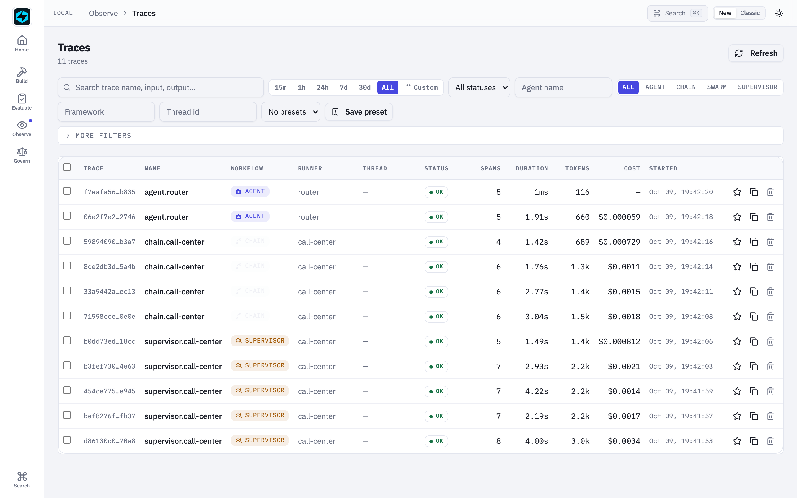
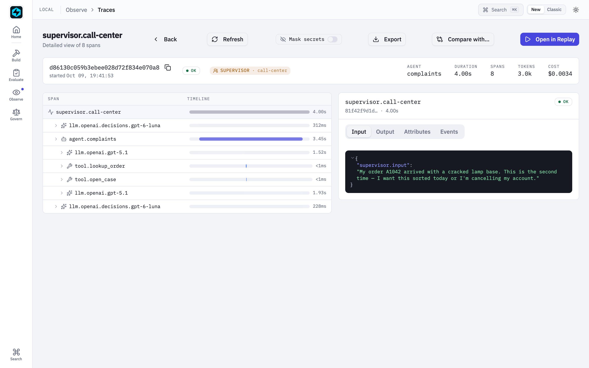
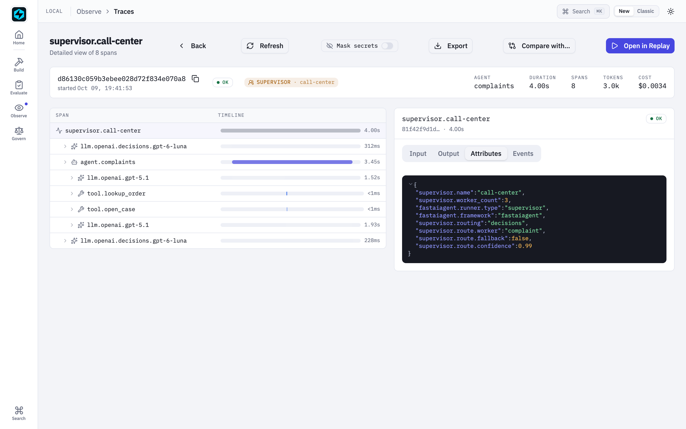
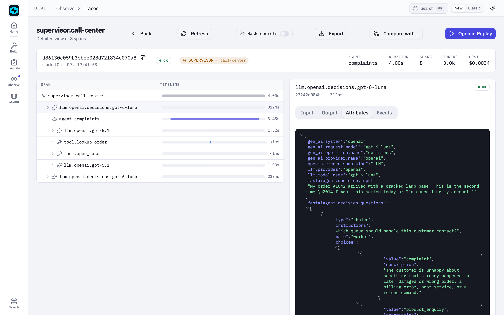
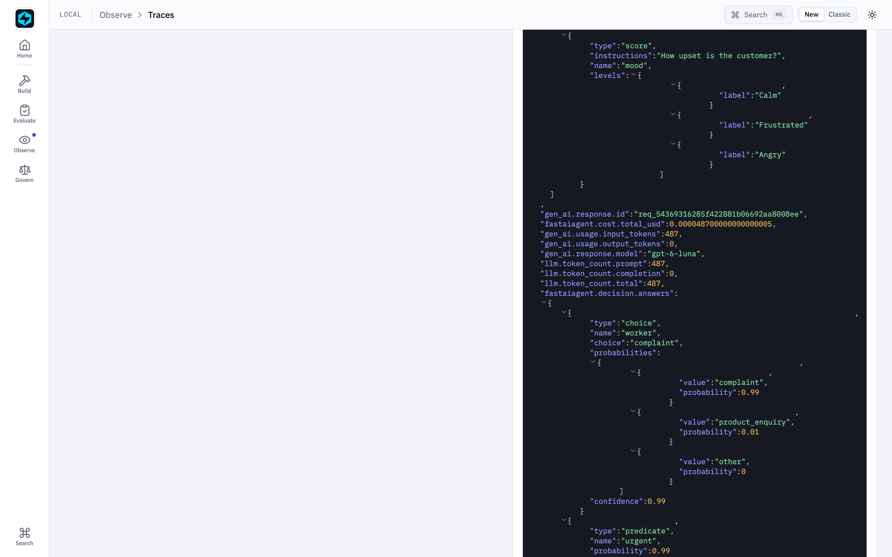
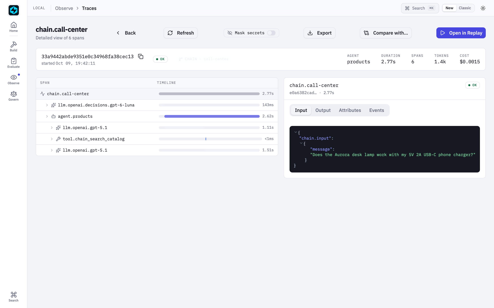
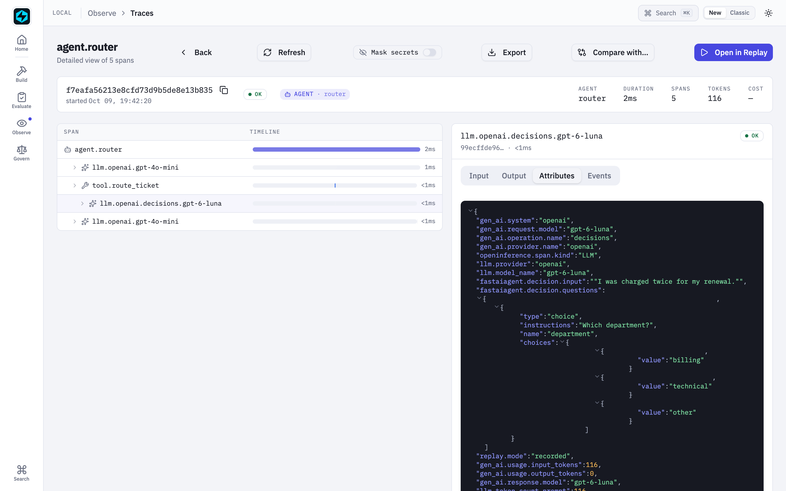
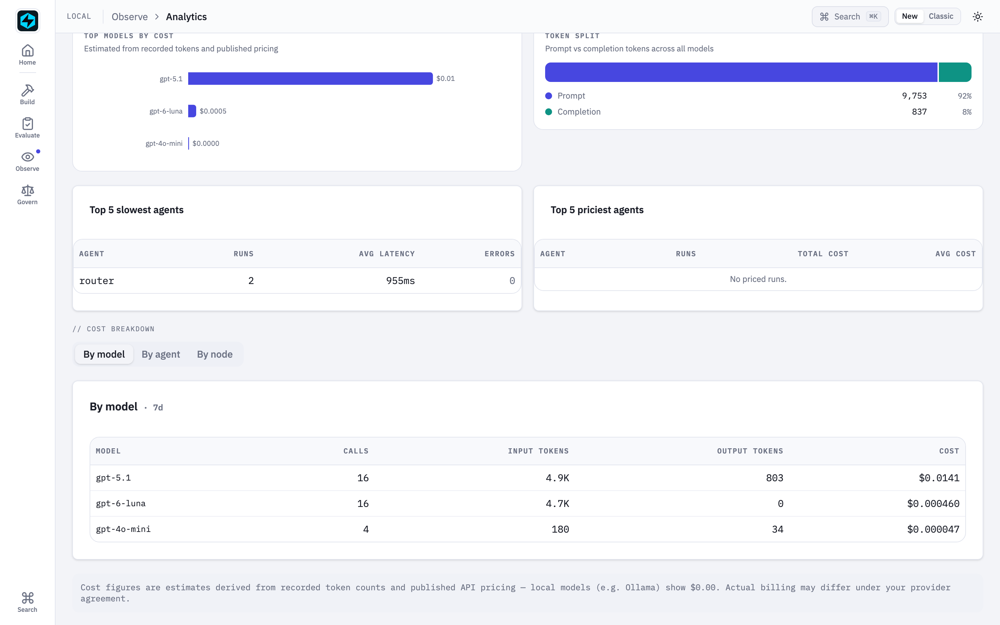

Route a Call Centre with the Decisions API¶
New in 1.84.0. This walkthrough builds a customer-support desk with three
queues: complaints, product enquiries, and everything else. Every
contact is routed to exactly one of them. The supervisor routes with OpenAI's
Decisions API, which serves the model gpt-6-luna, and
the workers are chat agents (gpt-5.1) with back-office tools.
The full scripts are
106_call_center_supervisor.py
and 107_call_center_chain.py.
Every output on this page comes from a live run.
zsh -lc 'python examples/106_call_center_supervisor.py --compare' # needs OPENAI_API_KEY
zsh -lc 'python examples/107_call_center_chain.py'
Why the Decisions API, and not a chat call, should route¶
The first thing a support desk does with any contact is decide who owns it. That's a classification with a fixed set of answers, not a conversation.
A tool-calling supervisor (Supervisor(routing="tools"), the default) answers
it with a chat model. The model reads the message, emits a delegate_to_<queue>
tool call, waits for the worker, then writes its own final answer. That's the
right shape when a supervisor has to plan: split a task, call several
workers, combine the results. For routing it buys two extra chat turns, and
nothing stops the model calling no tool at all.
Supervisor(routing="decisions") asks the question as a Choice instead. The
answer is one of your queues, with a confidence, in a few hundred milliseconds,
and the worker's reply goes back unchanged.
1. The workers¶
Each Worker is an ordinary Agent. Its description doubles as the
router's option text, so write it the way you'd brief a new colleague on
which queue owns what:
from fastaiagent.agent import Agent, Worker
from fastaiagent.llm import LLMClient
from fastaiagent.tool import FunctionTool
llm = LLMClient(provider="openai", model="gpt-5.1")
complaints = Worker(
role="complaint",
description=(
"The customer is unhappy about something that already happened: a late, "
"damaged or wrong order, a billing error, poor service, or a refund demand."
),
agent=Agent(
name="complaints",
llm=llm,
system_prompt="... apologise once, look up the order, open a case, offer what the returns policy allows ...",
tools=[FunctionTool(name="lookup_order", fn=lookup_order),
FunctionTool(name="open_case", fn=open_case)],
),
)
# products (search_catalog) and other (store_info, open_case) follow the same shape.
2. The decision supervisor¶
from fastaiagent.agent import Supervisor
from fastaiagent.llm import Predicate, Score
decider = LLMClient(model="gpt-6-luna")
desk = Supervisor(
name="call-center",
workers=[complaints, products, general],
routing="decisions",
router_llm=decider,
routing_instructions="Which queue should handle this customer contact?",
fallback_worker="other", # refused or unsure → never guess a specialist
routing_min_confidence=0.6,
routing_questions={ # asked in the SAME request as the route
"urgent": Predicate(instructions="The customer needs an answer today, or threatens to cancel, leave a bad review, or escalate."),
"mood": Score(instructions="How upset is the customer?", levels=["Calm", "Frustrated", "Angry"]),
},
validate_outputs=True, # review every reply before it goes out
validation_mode="decisions",
validation_llm=decider,
validation_criteria="The agent's reply directly addresses what the customer asked and tells the customer the next step.",
)
result = desk.run("My order A1042 arrived with a cracked lamp base ... sort it out today or I'm cancelling.")
One decide() call answers three questions: which queue, is it urgent, and how
upset is the customer. The worker receives the customer's message plus a note,
[Supervisor routing note] urgent: yes (p=0.99); mood: Angry, so it can set its
tone and priority. result.route records how the run was routed:
result.route.worker # "complaint"
result.route.confidence # 0.99
result.route.answers.predicates["urgent"].probability # 0.99
result.route.answers.scores["mood"].level # "Angry"
result.route.latency_ms, result.route.cost_usd # 486, 4.9e-05
result.route.reviews # [0.90]
3. What it does¶
> My order A1042 arrived with a cracked lamp base. This is the second time — ...
→ complaint · confidence 0.99 · urgent 0.99 · mood Angry · routed in 486 ms ($0.000049)
reply (3859 ms end to end, review 0.90):
I'm really sorry this has happened to you twice ... I've opened a high-priority
case for you: ID CS-2001 ... you can choose either: 1) A free replacement lamp,
or 2) A full refund ...
> Does the Aurora desk lamp work with my phone charger? It's a 5V 2A USB-C one.
→ product_enquiry · confidence 0.99 · urgent 0.00 · mood Calm · routed in 164 ms
> What time do your phone lines open on Saturday?
→ other · confidence 1.00 · urgent 0.00 · mood Calm · routed in 170 ms
> Is the Orbit speaker compatible with Google Home, and when can I get one?
→ product_enquiry · confidence 0.99 · urgent 0.10 · mood Calm · routed in 191 ms
> Hi, I need some help please.
→ other · confidence 0.89 · urgent 0.00 · mood Calm · routed in 167 ms
The angry repeat complaint is flagged urgent, and its case opens at high priority. The vague "Hi, I need help" goes to the general queue, which asks a clarifying question.
4. Decisions routing vs tool-call routing¶
--compare runs the same tickets through both modes. Both run without review, so
the comparison is like for like:
| Ticket | routing="decisions" |
routing="tools" (gpt-5.1) |
|---|---|---|
| Cracked lamp, repeat complaint | 3.9 s → complaint | 11.5 s → complaint |
| Lamp + USB-C charger | 2.7 s → product_enquiry | 5.1 s → product_enquiry |
| Saturday phone hours | 2.0 s → other | 5.2 s → other |
| Orbit speaker + Google Home | 2.6 s → product_enquiry | 7.7 s → product_enquiry |
| "Hi, I need some help" | 1.8 s → other | 1.4 s → answered itself |
The routes agree, and decision routing is 2–3× faster end to end. The last row is the other half of the argument: the tool-calling supervisor skipped delegation and answered itself. A decision router always puts the contact in exactly one queue.
5. Review what the reviewer can judge¶
The review is one Decisions predicate over the customer's message and the worker's reply. The reviewer hasn't seen the order system or the catalogue, so don't ask it whether the facts are right. An early run with the criterion "complete, correct, and on-topic" scored good replies at 0.3–0.5. Each rejection re-ran the worker, and a re-run worker re-runs its tools: one retry opened a duplicate support case. Ask what can be judged from the two texts ("addresses what the customer asked and tells them the next step"), and the same replies score 0.54–0.97 with no retries.
6. The same desk as a Chain¶
When you'd rather draw the flow as a graph you can validate, diff and version,
use a condition node with decision=:
from fastaiagent.chain import Chain
from fastaiagent.chain.node import NodeType
from fastaiagent.llm import Choice
chain = Chain("call-center", checkpoint_enabled=False)
chain.add_node(
"triage",
type=NodeType.condition,
decision={
"question": Choice(instructions="Which queue should handle this customer contact?",
options={"complaint": "...", "product_enquiry": "...", "other": "..."}),
"input": "{{input.message}}",
"llm": {"model": "gpt-6-luna"},
"min_confidence": 0.6,
},
)
chain.add_node("complaints", agent=complaints_agent)
chain.add_node("products", agent=products_agent)
chain.add_node("general", agent=general_agent)
chain.connect("triage", "complaints", label="complaint")
chain.connect("triage", "products", label="product_enquiry")
chain.connect("triage", "general", label="other")
chain.connect("triage", "general") # default: refused or unsure
result = await chain.aexecute({"message": "Does the Aurora desk lamp work with my USB-C charger?"})
result.node_results["triage"] # {"matched": "product_enquiry", "decision": {"confidence": 1.0, ...}}
> My order A1042 arrived with a cracked lamp base. Sort it out today or I'm cancelling.
triage → complaint (confidence 1.00) → complaints [3180 ms]
> Does the Aurora desk lamp work with my 5V 2A USB-C phone charger?
triage → product_enquiry (confidence 1.00) → products [2660 ms]
> What time do your phone lines open on Saturday?
triage → other (confidence 0.94) → general [3152 ms]
> Hi, I need some help please.
triage → other (confidence 0.93) → general [2302 ms]
chain.validate() refuses an option that has no edge, and chain.to_dict() is
plain JSON.
| Pick | When |
|---|---|
Supervisor(routing="decisions") |
You want urgency and mood handed to the worker, every reply reviewed, and result.route for analytics |
| Chain + decision node | The flow is a fixed graph you want to see, validate and version alongside other nodes |
Supervisor(routing="tools") |
The work is multi-step: split it, call several workers, combine |
7. End to end in the Local UI¶
Every screenshot below comes from a live run of examples 105–107, captured by
scripts/capture-decisions-screenshots.sh.
Every ticket is one trace¶
Each contact the desk handles is one supervisor.call-center trace (the
SUPERVISOR badge), and each run of the Chain version is one chain.call-center
trace. The two agent.router rows are example 105: a live run, and its recorded
replay.

A routed ticket: route → worker → review¶
Open the angry repeat complaint. The tree reads top to bottom in the order the desk worked:
llm.openai.decisions.gpt-6-luna, the routing call: one Decisions API request that answered queue, urgency and mood.agent.complaints, thegpt-5.1worker. You can see its chat turns (llm.openai.gpt-5.1) and its tool calls (tool.lookup_order,tool.open_case).llm.openai.decisions.gpt-6-lunaagain, the review of the reply.

The route is on the supervisor's root span: supervisor.routing="decisions",
supervisor.route.worker, .confidence and .fallback.

Inside one Decisions API call¶
Select the routing span and open Attributes. It's a standard OpenTelemetry
GenAI span: gen_ai.operation.name="decisions", gen_ai.provider.name="openai",
and gen_ai.request.model, plus the OpenInference keys
(openinference.span.kind="LLM", llm.model_name). Below them are the evidence
and the three questions it asked.

Further down the same panel are the answers, each with its probability distribution, the request id, the input-only token usage, and the call's cost.

The Chain version¶
A chain.call-center trace has the same shape: the triage decision
(llm.openai.decisions.gpt-6-luna), then only the queue it chose, here
agent.products with its catalogue lookup.

Replayed offline¶
Example 105 reruns a decision-driven agent with determinism="recorded". Every
span in the rerun, the chat turns and the Decisions call alike, carries
replay.mode="recorded": the answers came from the trace, not the network.

What routing costs¶
Analytics → Cost breakdown → By model puts the Decisions API next to the
chat models. Here 16 Decisions calls (every route and review) cost $0.000464
in total, against $0.0152 for the gpt-5.1 workers. The Decisions API bills
input tokens only, so its output column is 0.
